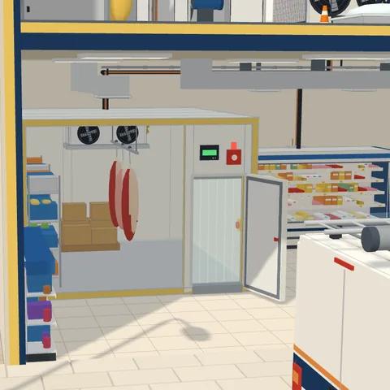
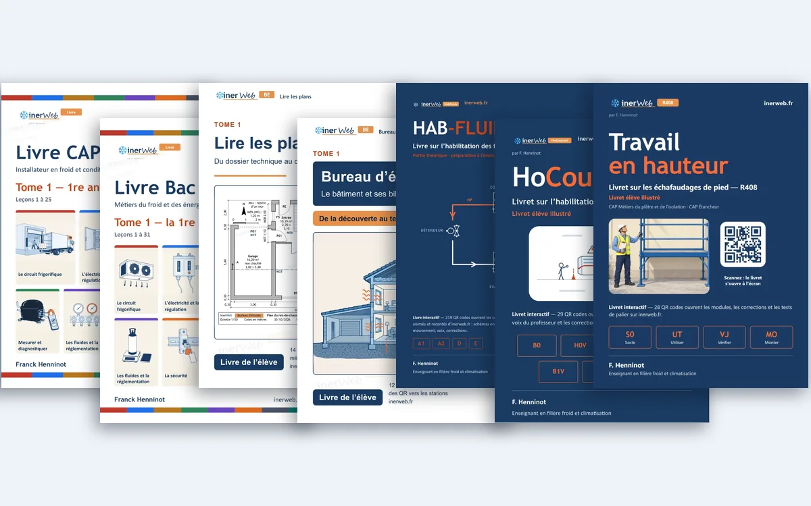
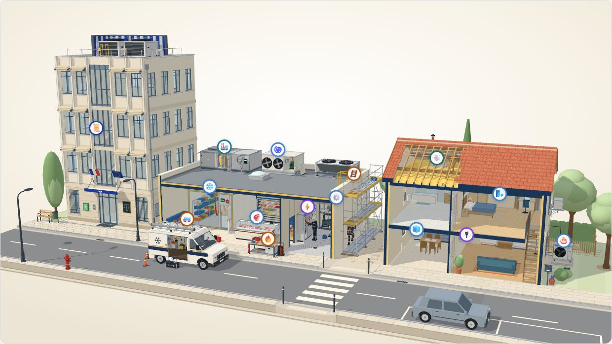
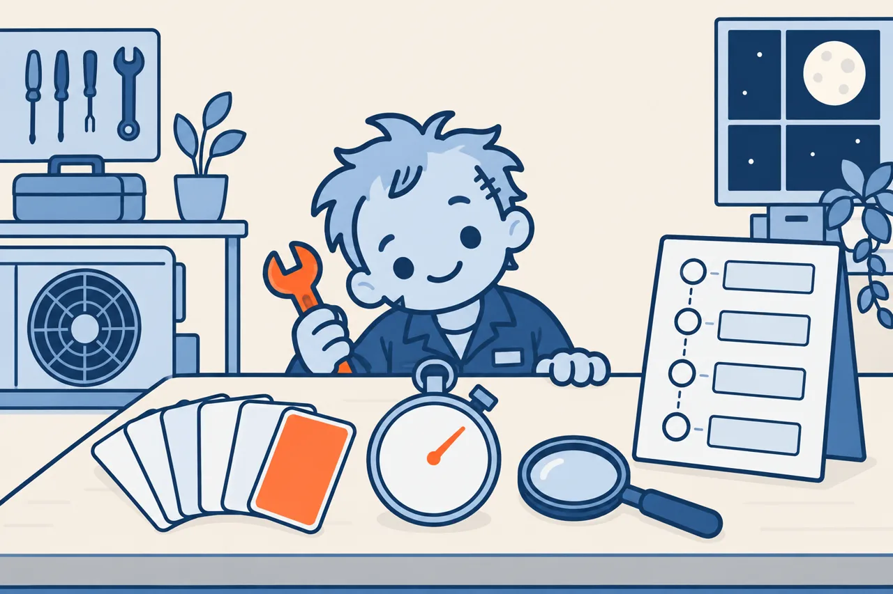
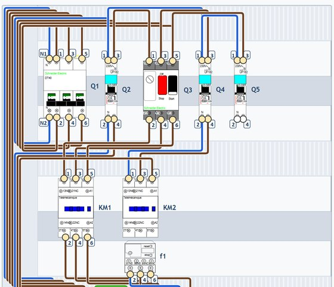
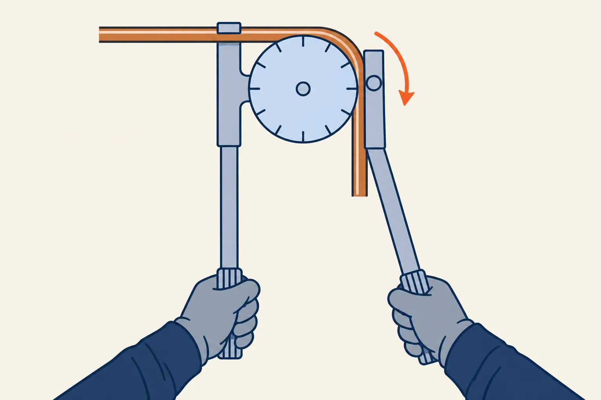
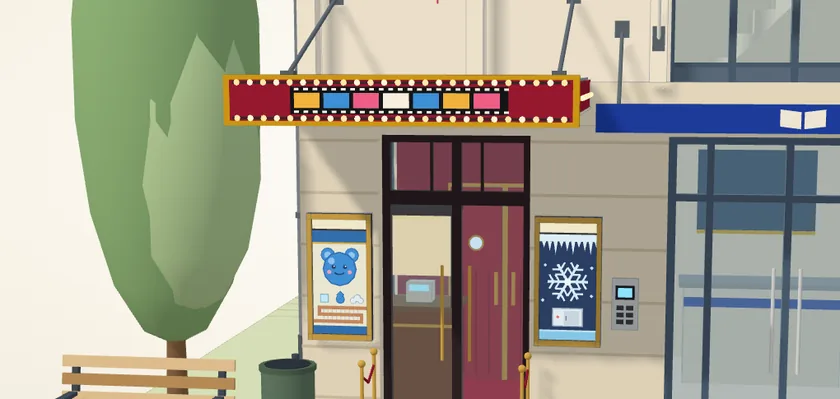

GRATUIT, SANS COMPTE, EN FRANÇAIS
Apprendre le froid et la climatisation, un cours après l’autre.
Des cours qui parlent, du CAP au BTS. Un projet personnel d’enseignant frigoriste.
Essayez : surchauffe, manifold, inverter
Vous êtes…
-
 Élève ou apprentiCAP, Bac pro, titre professionnel.Mes cours →
Élève ou apprentiCAP, Bac pro, titre professionnel.Mes cours →
-
 Candidat à une habilitationFluides, électricité, travail en hauteur.Me préparer →
Candidat à une habilitationFluides, électricité, travail en hauteur.Me préparer →
-
 Enseignant ou formateurUn support à trouver, une séance à préparer.Mon espace →
Enseignant ou formateurUn support à trouver, une séance à préparer.Mon espace →
-
 Curieux du métierVoir ce que fait un frigoriste.Découvrir →
Curieux du métierVoir ce que fait un frigoriste.Découvrir →

Voir d’abord à quoi ressemble un coursLe premier cours du parcours : « Du glaçon au circuit ». Une animation, une voix, rien à installer.
▶ Essayer ce coursCe que vous trouverez ici
 Des filmsLes notions du métier racontées en vidéo.
Des filmsLes notions du métier racontées en vidéo.
Des livresLes manuels du CAP, du Bac pro et des habilitations.
Un quartier en 3DOn touche un appareil pour voir comment il marche.
Des jeuxDix jeux pour retenir sans s’en rendre compte.
Un câblage virtuelOn câble une platine électrique à l’écran.
Les gestes du cuivreCintrer, braser, façonner : chaque geste en images.
Tout le site sur une page : 14 réseaux, 449 stations en ligne et plus de 9 000 narrations audio.
Voir tout le site →Quel diplôme préparez-vous ?
Vous verrez les cours qui servent à votre diplôme, dans l’ordre du programme.


Quelle habilitation préparez-vous ?
Chaque préparation a ses cours, son livret et ses questions d’entraînement.
Enseignant ou formateur : que cherchez-vous ?
Tout est libre d’accès. Aucun compte à créer, ni pour vous ni pour vos élèves.
-
Comprendre comment le site fonctionneLa visite guidée pour un enseignant
- Préparer une séanceChoisir un cours et ses documents

Trouver une animation ou un supportLe catalogue complet- Voir les livres de classeCAP, Bac pro, habilitations, lecture de plans
- Présenter les trois habilitationsLes trois préparations en onze vues, pour une direction
- Je dirige un centre de formationLe logiciel inerWeb Fluide, en démonstration (nouvel onglet)
Découvrir le métier de frigoriste.
Quatre façons de se faire une idée, de la plus courte à la plus longue.